1
Mathematica For Ec11: Introduction
Mathematica is a wonderful piece of symbolic math software that Caltech bestows upon its students. The main essence of its usefulness lies in its ability to simplify complex mathematical manipulations without compromising accuracy. In this guide, we cover some basic uses of Mathematica and how this software can be used for economic problems.
There are several types of people who may wind up using this guide, including:
If you are any of these people, you will find it useful to work through the examples in this text to gain some familiarity with Mathematica’s features and how they can be used to gain insight into economic concepts.
This guide covers the following topics:
If you have any ideas for new content to add to this guide, contact the course instructor, Dr. Rangel (rangel@hss.caltech.edu).
This guide was written in 2016, so if any compatibility issues arise during your year please contact the author, Naveen Arunachalam (narunach@caltech.edu).
2
Basic Usage of Mathematica
If you have never used Mathematica before, a lot of it can be very confusing. Likely, you have already accidentally modified some of the contents of this notebook and are not sure what to do. If so, either (a) press Ctrl+z (or Cmd+z, for Macs) to undo the changes, or (b) redownload the notebook and proceed from where you left off.
In this section, you will learn how to create a new document to get a firsthand taste of Mathematica, and evaluate your own expressions in that new file.
If you are already familiar with Mathematica, just skip to Chapter 3 to start with the economics.
The first thing you need to do is create a new notebook. Go to File > New > Notebook to bring up an Untitled document. You will see a blank document with a cursor.
If you want to get something calculated, just click anywhere and type an expression, and hit Shift+Enter to evaluate.
Example 2.1.1. (If you are viewing in Mathematica, not modify anything in this notebook):
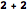
Example 2.1.2. Evaluating a simple expression

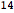
To query using natural language, type “=” before your expression to get an orange block symbol, and press Shift+Enter to evaluate:
Example 2.1.3. Typing (without quotes) “Graph of y=1-2x” using natural language input.
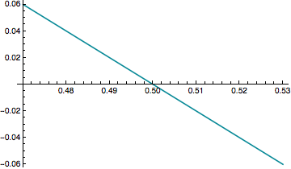
To query Wolfram Alpha, type “==” (two equals signs) before your expression to get an orange star symbol, and press Shift+Enter to evaluate. I recommend doing this instead of visiting wolframalpha.com, since you will get a lot more information in addition to premium features.
Example 2.1.4. Typing (without quotes) “solve for x in 5+x=sqrt(x^2+3)” using a Wolfram Alpha query.
solve for x in 5+x=sqrt(x^2+3)
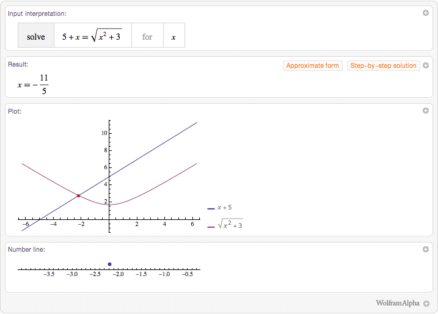
Most of your work in this class will focus on the first query method, i.e. the plain method used in Examples 2.1 and 2.2. Although the methods of Examples 2.3 and 2.4 are novel and convenient, they do not have same degree of versatility as native Mathematica code.
At this point your have likely accumulated quite a bit of clutter in your new document. To declutter your workspace, click and drag over the cells (or subcells) you want to delete, represented by blue brackets on the right edge of the screen. Then, press backspace or delete do remove those cells.
To edit a cell’s contents, click on any text that follows an In[#]:= line and edit it. The contents of the Out[#]:= line will grey out, and you can reactivate it by pressing Shift+Enter to generate a new answer.
Often, you would like to define variables in the same way you would by hand. To do this, Mathematica requires a variable name that starts with a letter and does not contain special characters. This variable name should be present on the left hand side of an equals sign, and a valid expression should be entered on the right hand side.
Example 2.1.5. Defining and working with variables. Note the use of semicolons to silence output.
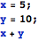
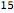
Example 2.1.6. Illustration of valid variable names (a letter followed by a string of letters and/or numbers), and what happens if you don’t silence output (i.e. if you forget semicolons)
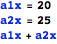
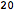
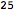
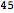
Sometimes you would like to use a previous answer in an expression. To do this, use the percent sign (%).
Example 2.1.7. Illustration of usage of “%” symbol
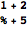
Sometimes you would like to stay in the same notebook and not have previous variables interfere with your calculations. To ensure this, you can use the Clear[] function or use the settings Evaluation > Notebook’s Default Context > Unique to Each Cell Group.
Example 2.1.8. Example usage of Clear[]. Note that when Mathematica does not have a value for a variable, it leaves the variable alone.
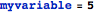

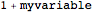
Mathematica is capable of symbolic math. This is especially useful for economics, since economics deals with the relationships between variables. In this section you will learn how to do simple manipulations with variables, make substitutions, get numeric answers, and define functions.
Mathematica makes variable manipulation easy. If variables do not have numerical values, they are treated as symbolic entities and will be handled as such.
Example 2.2.1. An example of basic variable manipulation
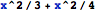
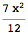
There are some special variables to be aware of, such as pi and e. To access these, write them with capital letters.
Example 2.2.2. Usage of pi and e in an expression. Note the e is written in bold, and the pi is written in Greek.
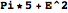
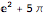
Example 2.2.3. A reminder about the difference a capital letter can make. (Capital letter = built-in constant; lowercase = variable)
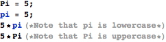

You can get a numerical answer by typing “//N” at the end of your queries. This takes the result of your query and runs it through Mathematica’s N[] function, which converts an expression to a number.
Example 2.2.4. Obtaining numerical answers for some simple expressions
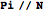

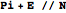
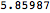
Sometimes it is more convenient to substitute values for variables after the expression is written. To do this, type “/.” (slash dot) at the end of your expression and use an arrow (“->”) between the variable name and the value you want to write in its place.
Example 2.2.5. Example of a substitution placed after an expression. Note that x is never assigned a value, but we are able to make substitutions.
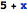
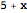
Mathematica has a lot of built-in functions that make life easier. Here are just a few to get started:
Example 2.2.6. Calculating a natural logarithm, a base-10 logarithm, and a sine, respectively.
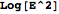
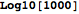
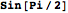
Mathematica’s functions can also operate on variables:
Example 2.2.7. Calculating the sum 2y+3y+4y+5y
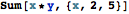
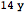
When you encounter a new Mathematica function you want to use, you can get some information by pressing the info button or the tooltip arrow that shows up when you type the function name. Note that built-in functions start with capital letters; this is so you can tell them apart from your own functions.
Sometimes you want to write and use your own functions. To do this, you use the following notation:
Example 2.2.8. Creating and using a function; note how variables in the function definition are followed by underscores. Also note that the function names start with lowercase letters.
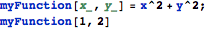
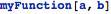
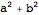
A quick note on the underscore (“_”) character in the function definition. Mathematica uses the underscore to represent the concept of “anything”, and the characters preceding the underscore represent a name to assign to that “anything”. In the case of the example above, when you type myFunction[someText], Mathematica scans someText for a comma, and assigns everything before the comma to the variable “x” and everything after it to the variable “y”. Then it takes that “x” and “y” and runs it through “x^2+y^2”. This is why it is always necessary to have the underscores present if you want your functions to actually work.
Mathematica deals with Boolean expressions (i.e. “True or False” expressions) to solve equations. To make a true-or-false comparison, use a double equals sign (“==”).
Example 2.3.1. An expression that evaluates to True, and an expression that evaluates to False. Note the double equals sign.
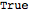
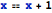
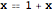
It is very important to use a double equals sign. If you accidentally use a single equals sign, it is usually best to (a) make sure you set Evaluation > Notebook’s Default Context > Unique to Each Cell Group, and (b) start over in a new cell, since a single equals sign permanently assigns the right hand side to the left hand side. This can often lead to unexpected consequences because your computer will remember that variable assignment forever unless you explicitly tell it not to.
When Mathematica solves an equation, it looks for value(s) of some variable(s) such that some Boolean condition(s) evaluate to True. Here are some examples:
Example 2.3.2. Solving a single equation
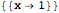
Example 2.3.3. Solving under different sets of conditions
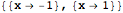
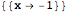
Example 2.3.4. Solving simultaneous equations which we disguise as True/False statements

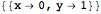
To grab and use the results of Solve[] and other related functions, we have to extract the answer we want from our solution. Answers come in the form of variable substitutions (arrows), so we need to use the slash dot (“/.”) notation at the end to plug them into whatever expression we want to use them for.
Example 2.3.5. Grabbing and using a result of Solve[]. Note that arrays are indexed starting at 1, and the [[1]] notation is translated by Mathematica into the instruction “get element 1 from the array”
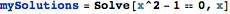
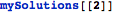
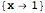
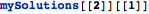
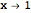

3
Modeling Optimizing Behavior
The first thing we observe is that economic entities tend to maximize thier utlity, which depends on some set of variables. To identify maxima, we often look at certain characteristics of net utility, such as derivatives, second derivatives, and boundary conditions. It is often possible to examine these systems in Mathematica to obtain greater understanding of how they operate.
Let us consider a firm that must allocate M units of a and b according to the utility function
{| , Automatic, $CellContext`IncludeCount[ | (`1`.`2`) |
Our constraint is
{| , Automatic, $CellContext`IncludeCount[ | (`1`.`2`) |
So our utility function becomes
{| , Automatic, $CellContext`IncludeCount[ | (`1`.`2`) |
To understand this from an intuitive standpoint, we can consider what happens to U(a,b) as we vary both a and b:
Figure 3.1.1. The dependence of U (vertical axis) on a and b (horizon axies); the cut plane represents valid combinations of a and b that satisfy a+b=M. (If things look broken, go to the menu and click Evaluation > Evaluate Initialization Cells, and make sure you clicked “Enable Dynamics” when the notebook opened. You can ignore the code above the figure.)
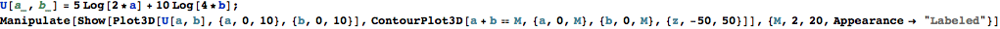
From this figure it is readily apparent that there exists a maximum somehwere along the cut plane of legal combinations of a and b. Let’s try to take a closer look at what the value of U(a,b) looks like when constrained by a specific M:
Figure 3.1.2. The dependence of U(a,b) on a when constrained by M. The location of the maximum is represented by a vertical line. (If things look broken, go to the menu and click Evaluation > Evaluate Initialization Cells, and make sure you clicked “Enable Dynamics” when the notebook opened. You can ignore the code above the figure.)
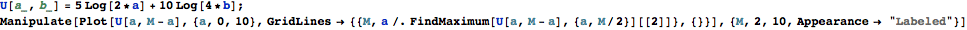
If this still a bit abstract, here’s both plots side-by-side:
Figure 3.1.3. The dependence of U(a,b) on a when constrained by M. A front view of the 3D plot is shown on the left to demonstrate its homology to the 2D plot on the right. Note you can change the sizes of the plots by clicking and then dragging the orange bounding box. (If things look broken, go to the menu and click Evaluation > Evaluate Initialization Cells, and make sure you clicked “Enable Dynamics” when the notebook opened. You can ignore the code above the figure.)
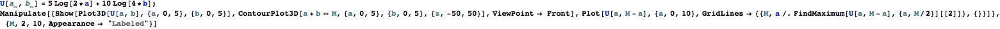
So now that we have a good understanding of the question, how can we apply it to obtain an answer for this system? We know the answer cannot be a boundary condition (i.e. a=M or b=M), since the penalty is negative infinity for those values of a and b. Thus, the answer must be some combination of nonzero a and b. From the interactive figures, we can deduce that the maximum is somewhat less than half of M. However, we want to know by how much, so we seek an analytical solution. We use the First Order Condition
{| , Automatic, $CellContext`IncludeCount[ | (`1`.`2`) |
to find the maximum, since the maximum is where the derivative is flat. In mathematica, this is very simple to calculate:
Example 3.1.1. Solving for the value of a that maximizes U in a long way and a succinct way.
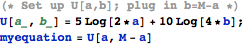
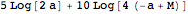
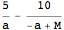
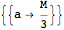
As we can see, our utility is maximized when a=M/3. (From a+b=M, we also get b=2M/3.) If you go back up to the graphs, this becomes readily apparent, for example, when you set M to 6: the maximum appears at a=2.
To get a sense of the extent to which Mathematica has simplified this question, try solving it by hand. You may notice that there are many places for human error, such as cross multiplying fractions and applying the chain rule to logarithms.
4
Consumer and Producer Theory